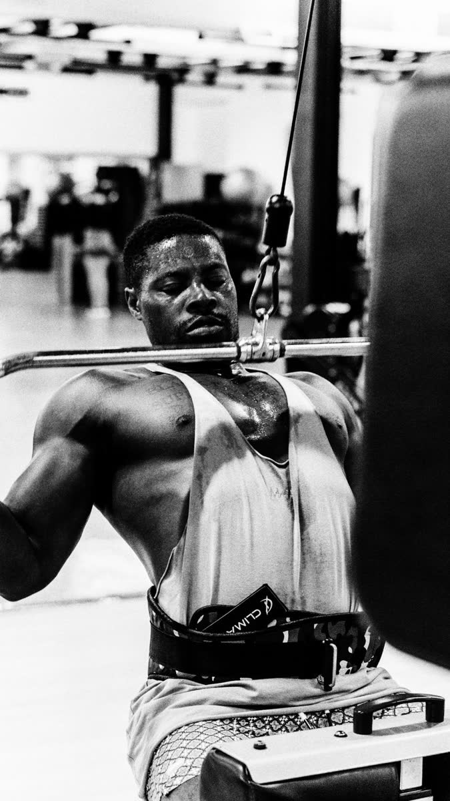
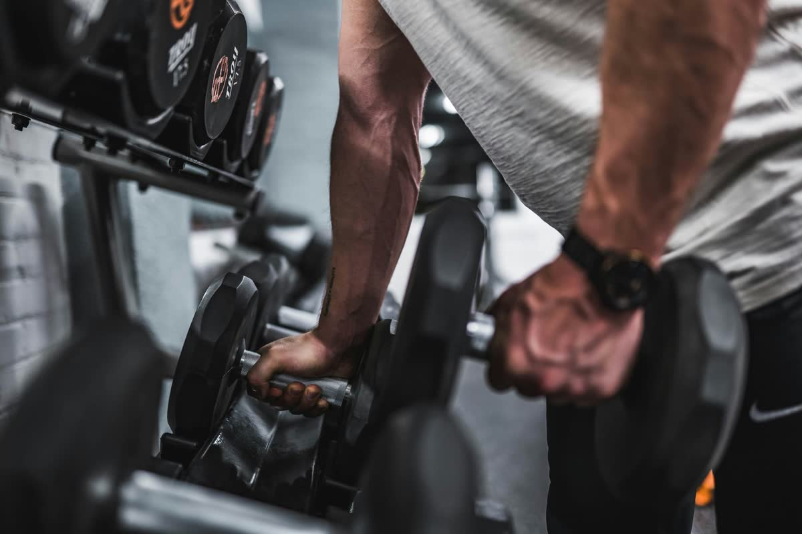
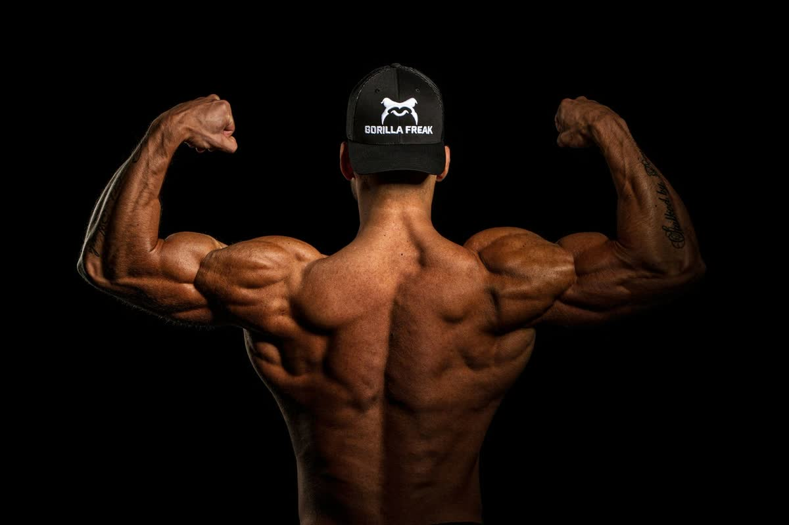
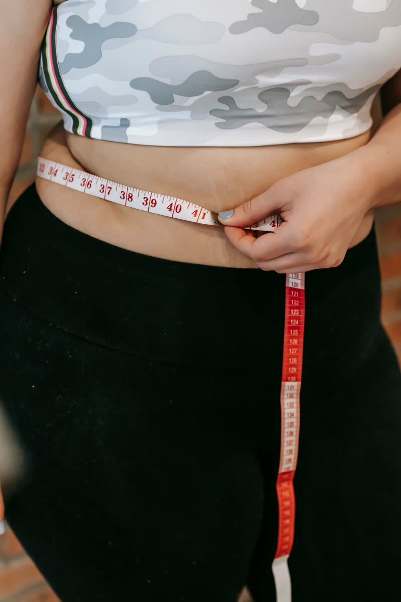

Natural training · No shortcuts
The muscle that stays is the one earned right.
Evidence-based training and nutrition, explained clearly, backed by research, and paired with videos you can actually watch.
Evidence-based training and nutrition, explained clearly, backed by research, and paired with videos you can actually watch.
Pick your level and get a reading path built for where you are right now.

Real progress isn't measured in shortcuts.
It's measured in consistency.
 Health
Health
The real risks, what happens to your body after you stop a cycle, and why the natural path is still the best long-term investment.
Video Myths
Myths
"No pain, no gain," "deadlifts hurt your back," and other beliefs explained in depth, with the science behind each one.

No shortcut
beats time.
 Recovery
Recovery
The full recovery timeline — protein synthesis, glycogen and soreness — explained with research, plus what to do in the hours and days after training.
Video Training
Training
Why a few weeks off costs less than you think, how injuries change things, how little training keeps your gains, and why muscle comes back faster.
Video Supplements
Supplements
The real risks and the myths, whey vs plant protein, how to choose a good one, and why you might not need it at all.
Video Nutrition
Nutrition
Protein per calorie explained, why peanut butter isn't a protein food, "high protein" label tricks, and a free checker for any nutrition label.
Video Nutrition
Nutrition
The exact number for your goal, protein in common foods, a real example day without protein powder, and what the research says about your kidneys.
TrainingWhich exercises to prioritize when you're starting out, how many days to train, and the most common mistakes in year one.
Video Supplements
Supplements
The most studied supplement in fitness, explained without myths: dosage, timing, and what to really expect.
Video RecoveryWhat the research says about sleep and muscle, how many hours you need, why your phone keeps you up, and what to do after a bad night.
NutritionBulk, cut or recomp: how to choose, how fast to gain or lose according to research, and how to avoid the most common mistakes.
 Recovery
Recovery
The real signs of accumulated fatigue, why training every set to failure backfires, when soreness isn't normal, and how to recover.
 Mindset
Mindset
What the research says about fitness content and body image, a quick self-check, and a 7-day plan to reset your feed.
Video MindsetWhat the science says about habits and mood, how to build real discipline, and how to come back after you've had to stop.

TrainingEvidence-backed rep ranges, volume, and rest, plus the 3-day split I use to train for size and the mistakes I made first.

NutritionAn honest, sustainable guide: how a calorie deficit works, what to expect, and why you don't need to suffer to get there.